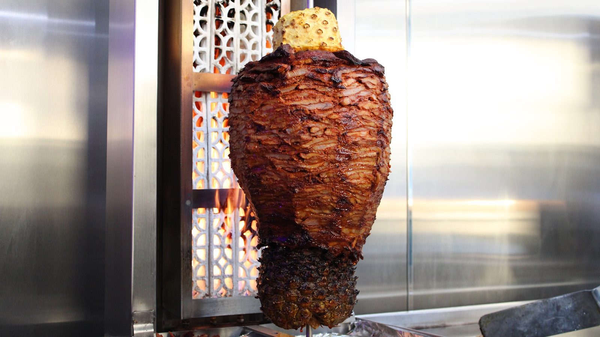

Taco pastor
The star of the menu. Pastor off the trompo on a lightly toasted tortilla, with onion, cilantro and pineapple.
Taco pastor, gringas and mini tacos with four salsas, on S Alamo St.

Where to find us
732 S Alamo St, San Antonio, TX 78205
Mon 12–10 PMTue 12 PM–12 AMWed 12 PM–12 AMThu 12 PM–12 AMFri 12 PM–2 AMSat 2 PM–2 AMSun Closed
DirectionsOpen till 2 AM Fri and Sat
Come hungry
Closed Sundays. Open until 2 AM Friday and Saturday. Pay at the counter.
One thing, done well
Start here.
The star of the menu. Pastor off the trompo on a lightly toasted tortilla, with onion, cilantro and pineapple.

Mini tacos come with lime, onion, cilantro and the four salsas. Gringas are like an al pastor quesadilla, cheese melted through the meat.

Four salsas, from tomato pineapple to serrano heat. Fresh lemonade, or a beer or soda from the fridge.

The focus of the menu
Mix them


4.6 ★ · 952 Google reviews
Actually met the chef while filling my propane tanks. He explained he had a taqueria and that the propane is needed to really shoot the flames out for his trompo. Take a look at the videos others have posted of it (kicking myself for forgetting to take pictures)- it’s the real deal! I had the mini tacos and the Gringas. For me, I’ve gotta have both!
These are the best tacos I have ever had in my life. Lightly toasting the taco creates a crunchy texture, followed by the melt in your mouth meat, and sweetness of pineapple. Get the fresh lemonade and safe to say you will be dreaming of this pairing forever, thank you!! P.s. we went back for seconds and the gringa taco is amazing!! Get it!
Fantastic small, basic Taqueria that has a limited menu that is focused on Taco Pastor- but man those are delicious 🤤. Nice atmosphere with good music and cool dudes serving. Pay and pick your bear or soda from the fridge. I would definitely go back when in the neighborhood.
Meet the crew
A short menu with one star: taco pastor cooked on a trompo, a pineapple riding on top. Red walls, a black wainscot counter, an open flame.
Good music, a clean room and friendly guys behind the counter. The propane keeps the trompo flames roaring.
Pay at the counter, grab a beer or soda from the fridge, then mix your salsas.